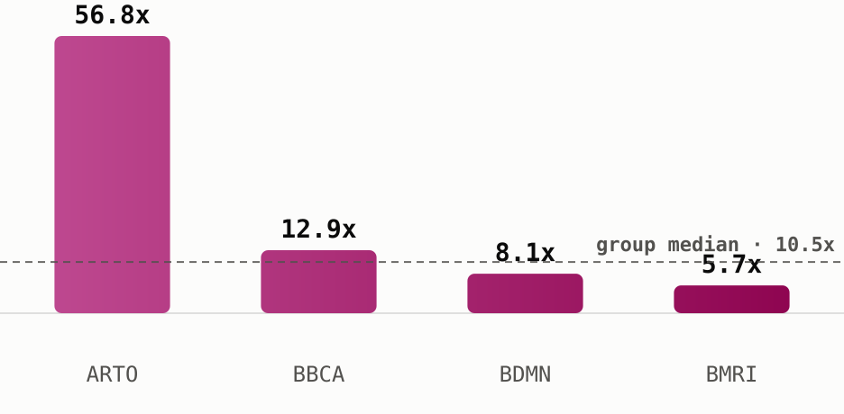

<!-- Sectors Sector Spotlight - Banks, 16 Jul 2026, data as of 15 Jul 2026. All figures from sectors.app unless cited. -->
<div style="margin:0;padding:0;background:#f2ede4;">
<table role="presentation" width="100%" cellpadding="0" cellspacing="0" style="background:#f2ede4;padding:24px 0;">
<tr><td align="center">
<table role="presentation" width="600" cellpadding="0" cellspacing="0" style="width:600px;max-width:600px;background:#fdf7ee;border-radius:14px;overflow:hidden;font-family:-apple-system,Segoe UI,Roboto,Helvetica,Arial,sans-serif;color:#1c1c1c;">

  <!-- Header -->
  <tr><td style="padding:28px 32px 8px 32px;border-bottom:2px solid #1c1c1c;">
    <table role="presentation" width="100%"><tr>
      <td style="font-size:24px;font-weight:800;color:#1c1c1c;">Sectors Sector Spotlight</td>
      <td align="right" width="110">
        
      </td>
    </tr></table>
    <div style="font-size:13px;color:#6b6b6b;padding-top:4px;">16 July 2026 &nbsp;|&nbsp; data as of 15 July 2026</div>
  </td></tr>

  <!-- Headline -->
  <tr><td style="padding:22px 32px 0 32px;">
    <div style="font-size:21px;font-weight:800;color:#1c1c1c;line-height:1.3;">Bank Jago led the banking sector's week, but not on a cheap multiple</div>
    <p style="font-size:14px;line-height:1.55;color:#333;margin:8px 0 0 0;">
      Bank Jago (<a href="https://sectors.app/idx/arto" style="color:#9E0142;font-weight:700;text-decoration:none;">$ARTO</a>)
      topped every bank on IDX over the past seven days, up <b>23.2%</b> while the banks
      sub-sector as a whole actually slipped <b>-1.1%</b> over the same window
      (sectors.app). That gap between one runaway name and a sector that mostly went
      nowhere is the reason to look at what these banks actually trade for.
    </p>
  </td></tr>

  <!-- The group -->
  <tr><td style="padding:22px 32px 0 32px;">
    <div style="font-size:17px;font-weight:800;color:#1c1c1c;">The group</div>
    <p style="font-size:14px;line-height:1.55;color:#333;margin:8px 0 0 0;">
      Indonesian banks trade at a <b>median 2026 P/E of 10.5x</b>, down from 14.7x in
      2025 and 16.9x in 2023, the cheapest multiple the group has carried in this
      five-year series (sectors.app). Median 2026 P/B sits at 0.74x, also the series
      low. Even so, the sub-sector's own market cap is down <b>-1.1% over the past
      week</b> and <b>-22.8% year-to-date</b>, so the multiple compression here is a
      re-rating lower, not a rally, and it's happening while at least one name inside
      the group is doing the opposite.
    </p>
  </td></tr>

  <!-- The comparison -->
  <tr><td style="padding:22px 32px 0 32px;">
    <div style="font-size:17px;font-weight:800;color:#1c1c1c;">The comparison</div>
    <table role="presentation" width="100%" cellpadding="0" cellspacing="0" style="margin-top:12px;font-size:12.5px;border-collapse:collapse;">
      <tr style="background:#fbe9d8;color:#1c1c1c;font-weight:700;">
        <td style="padding:8px 8px;">Ticker</td><td style="padding:8px 8px;">Price</td><td style="padding:8px 8px;">2026 P/E</td><td style="padding:8px 8px;">vs median (10.5x)</td><td style="padding:8px 8px;">ROE</td><td style="padding:8px 8px;">Div yield</td><td style="padding:8px 8px;">7d move</td>
      </tr>
      <tr><td style="padding:8px 8px;border-bottom:1px solid #eee;"><a href="https://sectors.app/idx/arto" style="color:#9E0142;font-weight:700;text-decoration:none;">$ARTO</a></td><td style="padding:8px 8px;border-bottom:1px solid #eee;">1,250</td><td style="padding:8px 8px;border-bottom:1px solid #eee;">56.8x</td><td style="padding:8px 8px;border-bottom:1px solid #eee;">5.4x the median</td><td style="padding:8px 8px;border-bottom:1px solid #eee;">3.1%</td><td style="padding:8px 8px;border-bottom:1px solid #eee;">n/a</td><td style="padding:8px 8px;border-bottom:1px solid #eee;color:#568475;font-weight:700;">+23.2%</td></tr>
      <tr><td style="padding:8px 8px;border-bottom:1px solid #eee;"><a href="https://sectors.app/idx/bdmn" style="color:#9E0142;font-weight:700;text-decoration:none;">$BDMN</a></td><td style="padding:8px 8px;border-bottom:1px solid #eee;">4,160</td><td style="padding:8px 8px;border-bottom:1px solid #eee;">8.1x</td><td style="padding:8px 8px;border-bottom:1px solid #eee;">below median</td><td style="padding:8px 8px;border-bottom:1px solid #eee;">6.8%</td><td style="padding:8px 8px;border-bottom:1px solid #eee;">3.4%</td><td style="padding:8px 8px;border-bottom:1px solid #eee;color:#568475;font-weight:700;">+9.2%</td></tr>
      <tr><td style="padding:8px 8px;border-bottom:1px solid #eee;"><a href="https://sectors.app/idx/bmri" style="color:#9E0142;font-weight:700;text-decoration:none;">$BMRI</a></td><td style="padding:8px 8px;border-bottom:1px solid #eee;">4,200</td><td style="padding:8px 8px;border-bottom:1px solid #eee;">5.7x</td><td style="padding:8px 8px;border-bottom:1px solid #eee;">well below median</td><td style="padding:8px 8px;border-bottom:1px solid #eee;">17.2%</td><td style="padding:8px 8px;border-bottom:1px solid #eee;">11.4%</td><td style="padding:8px 8px;border-bottom:1px solid #eee;color:#568475;font-weight:700;">+5.8%</td></tr>
      <tr><td style="padding:8px 8px;"><a href="https://sectors.app/idx/bbca" style="color:#9E0142;font-weight:700;text-decoration:none;">$BBCA</a></td><td style="padding:8px 8px;">6,125</td><td style="padding:8px 8px;">12.9x</td><td style="padding:8px 8px;">above median</td><td style="padding:8px 8px;">20.4%</td><td style="padding:8px 8px;">5.8%</td><td style="padding:8px 8px;color:#D53E50;font-weight:700;">-0.8%</td></tr>
    </table>
    <p style="font-size:11px;font-style:italic;color:#6b6b6b;margin:8px 0 0 0;">As of 15 Jul 2026, sectors.app. P/E and P/B are 2026 figures from each name's own historical valuation series.</p>
    <div style="padding:16px 0 4px 0;">
      
    </div>
    <p style="font-size:12px;font-style:italic;line-height:1.5;color:#6b6b6b;margin:6px 0 0 0;">
      Bank Jago trades at more than five times the group median, the clearest split between this week's mover and this week's multiples (sectors.app).
    </p>
    <p style="font-size:14px;line-height:1.55;color:#333;margin:12px 0 0 0;">
      Bank Jago (<a href="https://sectors.app/idx/arto" style="color:#9E0142;font-weight:700;text-decoration:none;">$ARTO</a>)
      is this week's clearest case of price outrunning valuation: its 2026 P/E of 56.8x
      is more than five times the group median, and while its return on equity has been
      climbing, from 0.9% in 2023 to 3.1% in 2025, it's still a fraction of what the
      group's larger names post. Bank Danamon (<a href="https://sectors.app/idx/bdmn" style="color:#9E0142;font-weight:700;text-decoration:none;">$BDMN</a>)
      and Bank Mandiri (<a href="https://sectors.app/idx/bmri" style="color:#9E0142;font-weight:700;text-decoration:none;">$BMRI</a>)
      both rallied this week too, 9.2% and 5.8%, while staying at or below the group
      median on P/E; Mandiri's 17.2% ROE is the second-highest of the four names here,
      next to a dividend yield of 11.4%, the richest in this comparison. Bank Central
      Asia (<a href="https://sectors.app/idx/bbca" style="color:#9E0142;font-weight:700;text-decoration:none;">$BBCA</a>),
      the sub-sector's largest name by market cap and the group's most profitable on
      ROE at 20.4%, was the odd one out this week: it slipped -0.8% even while trading
      at a premium to the group median.
    </p>
  </td></tr>

  <!-- The takeaway -->
  <tr><td style="padding:22px 32px 0 32px;">
    <div style="font-size:17px;font-weight:800;color:#1c1c1c;">The takeaway</div>
    <p style="font-size:14px;line-height:1.55;color:#333;margin:8px 0 0 0;">
      On this screen, "cheap" points at Bank Mandiri: the lowest P/E of the four against
      the second-highest ROE, still up on the week. Bank Jago's move is the opposite
      kind of story, a rally that has pushed its multiple well past what any other name
      in the group commands, on fundamentals that are improving but still thin. Neither
      is a call to buy or avoid either name, it's a reminder that this week's biggest
      mover and this week's cheapest multiple weren't the same stock.
    </p>
  </td></tr>

  <!-- CTA -->
  <tr><td style="padding:26px 32px 4px 32px;" align="center">
    <a href="https://sectors.app/indonesia/banks" style="display:inline-block;background:#9E0142;color:#ffffff;font-size:14px;font-weight:700;text-decoration:none;padding:12px 28px;border-radius:8px;">Screen the banks sub-sector on Sectors</a>
  </td></tr>

  <!-- Upcoming event -->
  <tr><td style="padding:22px 32px 0 32px;">
    <div style="font-size:17px;font-weight:800;color:#1c1c1c;padding-bottom:10px;">Upcoming Events</div>
    <table role="presentation" width="100%" cellpadding="0" cellspacing="0" style="background:#fbe9d8;border-radius:10px;overflow:hidden;"><tr><td>
      
      <div style="padding:16px 18px 0 18px;font-size:15px;font-weight:800;color:#1c1c1c;">Automated IDX Stock Intelligence with n8n and Sectors API</div>
      <p style="padding:0 18px;font-size:13px;line-height:1.6;color:#333;margin:8px 0 0 0;">A hands-on exploration of workflow automation for Indonesian capital markets, from connecting live IDX data via Sectors API to building low-code intelligence pipelines and automated stock monitoring systems with n8n.</p>
      <div style="padding:10px 18px 0 18px;font-size:12.5px;line-height:1.8;color:#6b6b6b;">
        <b>Date:</b> 27th and 28th July, 2026<br>
        <b>Time:</b> 18.30 &ndash; 21.00 (GMT+7)<br>
        <b>Medium:</b> Zoom Conferencing (Online)<br>
        <b>Language:</b> Indonesian (by Alya Dwinanda)<br>
        <b>Intended Audience:</b> Analysts, investors, and automation-curious professionals working with Indonesian capital markets
      </div>
      <div style="padding:16px 18px 18px 18px;">
        <a href="https://supertype.ai/events/n8n" style="display:inline-block;background:#9E0142;color:#ffffff;font-size:13px;font-weight:800;text-decoration:none;padding:11px 26px;border-radius:8px;">Register here</a>
      </div>
    </td></tr></table>
    <table role="presentation" width="100%" cellpadding="0" cellspacing="0" style="background:#fbe9d8;border-radius:10px;overflow:hidden;margin-top:14px;"><tr><td>
      
      <div style="padding:16px 18px 0 18px;font-size:15px;font-weight:800;color:#1c1c1c;">Hermes Agent x Sectors Community Meetup: Build a Financial AI Agent That Learns and Improves</div>
      <p style="padding:0 18px;font-size:13px;line-height:1.6;color:#333;margin:8px 0 0 0;">Install Hermes Agent, connect it to live IDX and SGX market data through the Sectors skill, and watch it write its own analytical skills. A casual, hands-on community meetup in Jakarta on building a self-improving financial AI agent.</p>
      <div style="padding:10px 18px 0 18px;font-size:12.5px;line-height:1.8;color:#6b6b6b;">
        <b>Date:</b> 1st August, 2026<br>
        <b>Time:</b> 13.00 &ndash; 16.00 (GMT+7)<br>
        <b>Venue:</b> Block71, Ariobimo Sentral Building, 8th Floor, Jl. H. Rasuna Said, South Jakarta
      </div>
      <div style="padding:16px 18px 18px 18px;">
        <a href="https://supertype.ai/events/hermes" style="display:inline-block;background:#9E0142;color:#ffffff;font-size:13px;font-weight:800;text-decoration:none;padding:11px 26px;border-radius:8px;">Register here</a>
      </div>
    </td></tr></table>
  </td></tr>

  <!-- Appendix -->
  <tr><td style="padding:22px 32px 0 32px;">
    <div style="font-size:13px;font-weight:800;color:#1c1c1c;padding-bottom:6px;">Appendix: Sectors API endpoints (fields used)</div>
    <p style="font-size:12px;line-height:1.7;color:#6b6b6b;margin:0;">
      <code style="background:#f2ede4;padding:1px 4px;border-radius:3px;">companies/top-changes/?classifications=top_gainers,top_losers&amp;periods=7d&amp;sub_sector=banks&amp;n_stock=5</code> &mdash; the week's standout discovery<br>
      <code style="background:#f2ede4;padding:1px 4px;border-radius:3px;">subsector/report/banks/</code> &mdash; <code style="background:#f2ede4;padding:1px 4px;border-radius:3px;">statistics.filtered_median_pe</code> (10.5x group median), <code style="background:#f2ede4;padding:1px 4px;border-radius:3px;">market_cap.mcap_summary.mcap_change.1w</code>/<code style="background:#f2ede4;padding:1px 4px;border-radius:3px;">.ytd</code><br>
      <code style="background:#f2ede4;padding:1px 4px;border-radius:3px;">companies/?where=sub_sector = 'banks' and pe_ttm &gt; 0&amp;order_by=pe_ttm&amp;limit=15&amp;include_query_values=true</code> &mdash; ranked members, guarded against negative-P/E noise<br>
      <code style="background:#f2ede4;padding:1px 4px;border-radius:3px;">company/report/{ARTO,BDMN,BMRI,BBCA}.JK/?sections=overview,valuation,financials,dividend</code> &mdash; per-name P/E, P/B, ROE, dividend yield
    </p>
    <p style="font-size:11px;line-height:1.6;color:#8a8a8a;margin:8px 0 0 0;">No web-sourced claims this issue; every figure traces to a Sectors API field, cited inline (sectors.app).</p>
  </td></tr>

  <!-- Footer -->
  <tr><td style="padding:18px 32px 28px 32px;border-top:1px solid #e4cdb4;margin-top:12px;">
    <p style="font-size:11px;line-height:1.5;color:#8a8a8a;margin:16px 0 0 0;">
      This newsletter is data reporting and market commentary, not investment advice or a
      recommendation to buy or sell any security. Figures are from
      <a href="https://sectors.app" style="color:#9E0142;text-decoration:none;">sectors.app</a>
      as of 15 July 2026 unless otherwise cited. Do your own research.
    </p>
    <p style="font-size:11px;color:#8a8a8a;margin:10px 0 0 0;">
      &copy; 2026 Sectors.app. All rights reserved. &nbsp;|&nbsp; Privacy Policy &nbsp;|&nbsp; Terms of Service &nbsp;|&nbsp; Unsubscribe
    </p>
  </td></tr>

</table>
</td></tr>
</table>
</div>
